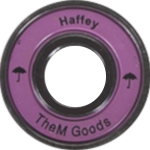
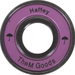

(2011)Wicemistrzyni Swiata w jeździe freestyle: Slalom
(2013)Wicemistrzyni Swiata w jeździe freestyle: Slalom w parze
Wystep pary:Klaudia Hartmanis i Michał Sulinowski
NIGHTSKATING!
Nightskating to wieczorne przejazdy rolkarzy ulicami miasta. Spokojne tempo przejazdu pozwala nadążyć osobom w każdym wieku, jednak wymagane są podstawowe umiejętności jazdy i hamowania.
Ogranizcja NS w Polsce!
Jedną z bardziej znanych ogranizjacji to Fundacja Violet Kiwi która angażuje się w różnorodne przedsięwzięcia pożyteczne społecznie, a ich głównym celem jest popularyzacja wrotkarstwa poprzez organizacje przejazdów Nightskating
 Podstawy
Podstawy
 Rodzaj jazd
Rodzaj jazd
 Rolki polska rzecz

Ciekawostki
Rolki polska rzecz

Ciekawostki